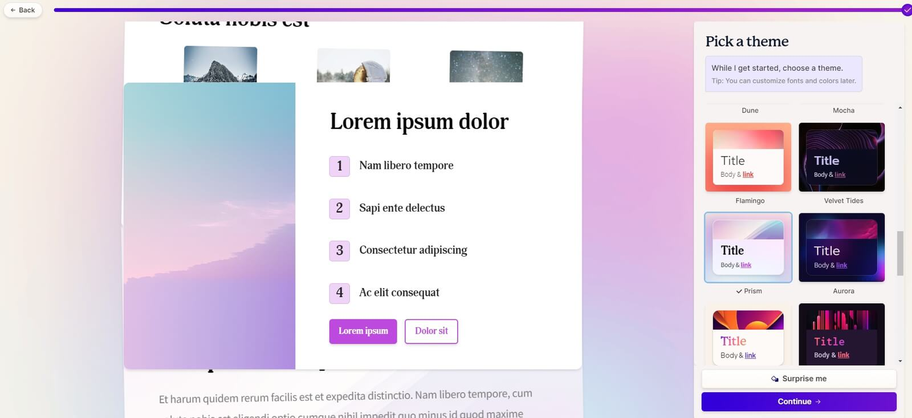

Gamma

Gamma AI - это передовая нейросеть, разработанная для генерации полноценных презентаций, включая текст, дизайн, шрифты и другие важные элементы.
- Ключевые характеристики:
- Генерация текста: Gamma AI обладает мощными алгоритмами генерации текста, способными создавать содержательные и информативные слайды. Нейросеть анализирует заданный контекст и автоматически генерирует текст, соответствующий требованиям и целям презентации. Она может предлагать заголовки, списки, абзацы и другие текстовые элементы, помогая пользователям составлять презентации высокого качества.
- Дизайн и визуальные элементы: Одной из ключевых фишек Gamma AI является возможность генерации дизайна и визуальных элементов презентаций. Нейросеть предлагает разнообразные макеты, стили и темы, которые могут быть применены к слайдам. Она учитывает цветовую гамму, композицию, расположение текста и изображений, создавая привлекательные и профессиональные слайды.
- Шрифты и форматирование: Gamma AI позволяет настраивать шрифты и форматирование текста в презентации. Нейросеть предлагает различные варианты шрифтов, размеров, выравнивания и других атрибутов текстовых элементов. Это позволяет пользователям настроить внешний вид текста и создать гармоничный и сбалансированный дизайн для своих слайдов.
- Автоматическое выравнивание и структурирование: Gamma AI обеспечивает автоматическое выравнивание и структурирование слайдов. Нейросеть оптимизирует расположение текста, изображений и других элементов на слайде, обеспечивая эстетическую привлекательность и удобство чтения. Она также помогает структурировать презентацию, предлагая логическое разделение на разделы и подразделы.
- Список терминов:
- Фишка - Специфическая черта, сущность, особенность чего-либо
- Слайд - это одна страница презентации.
- Другие статьи